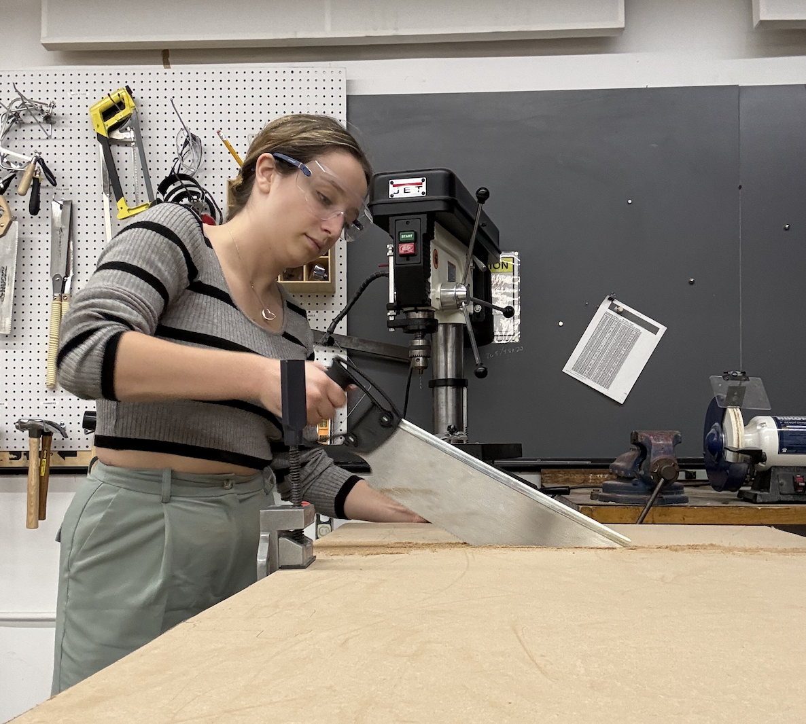
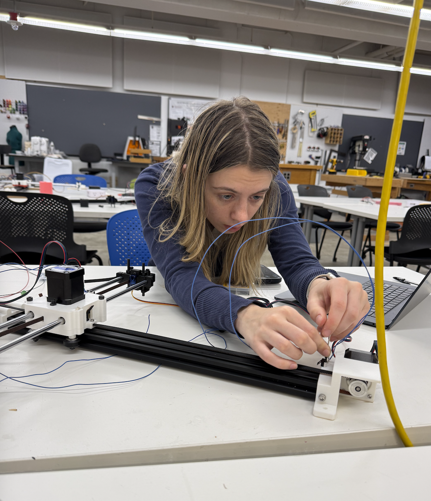
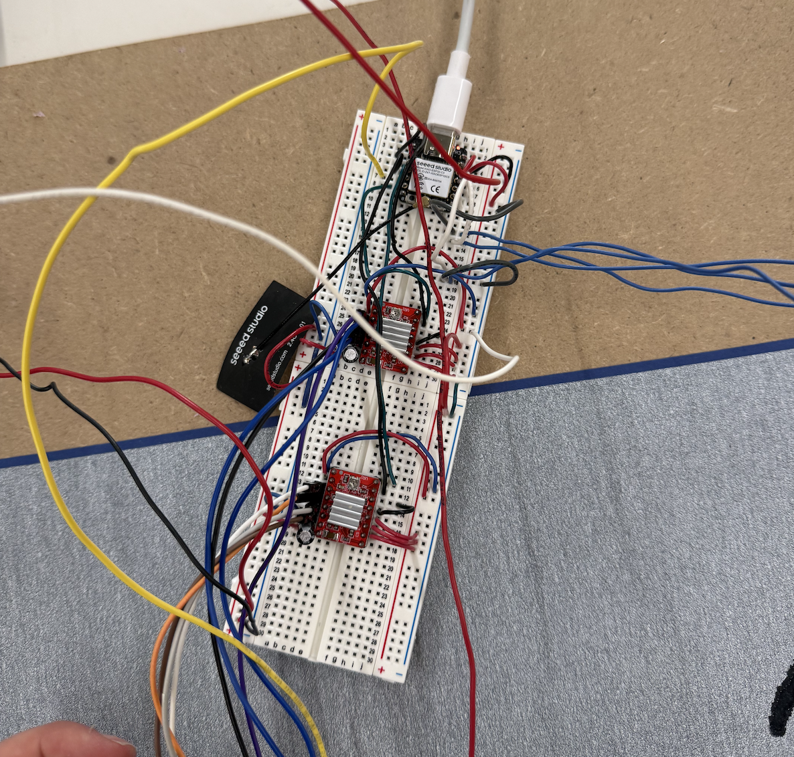

Week 10: Machine Building and End Effectors
Background
With Marc and Jolana: our idea for our pen plotter was to take buddha paper and water; when a pre-filled water pen traces on the "buddha" paper, the trace disappears within a few seconds. We wanted to draw a clock on the "buddha" paper, re-drawing the ticks of the clock and the hands every few seconds.
Constructing and Assembling



I sawed a large flat board to be the basis of the drawing machines. We then constructed the x/y plotter using the PS70 website instructions. We ran into some issues with the stepper motor not aligning with the track, but Jolana and Marc eventually figured it out!
Materials: ~3 feet x ~2.5 ft board, stepper motors, eccentric nuts, nuts, screws, x and y metal exis, 3d printed box and pen holder.
Circuit

We then began piecing together the circuit. We soldered with the ESP32 but it short circuited and started smoking. With only a little time left, we started from scratch with a non-solderable breadboard. We finally got the servos working after many, MANY hours.
Materials: capacitors, drivers, xiao esp32 c3, two servo motors, and a non-solderable breadboard
Code
void loop() {
serviceSerial();
processHoming();
scheduleClockIfNeeded();
executeNextCommandIfReady();
runSteppers();
}
To code, we adjusted Bobby's original cart code and did the following steps: connect to wifi, draw clock, repeat draw clock.
Final Videos
Finally, we put it all together! We constructed the base, assembled the machine, put together the circuit, uploaded the code and tested! At first we only saw the pen drawing a line over and over again, but with Jolana and Marc's diligent problem solving, it now works!!